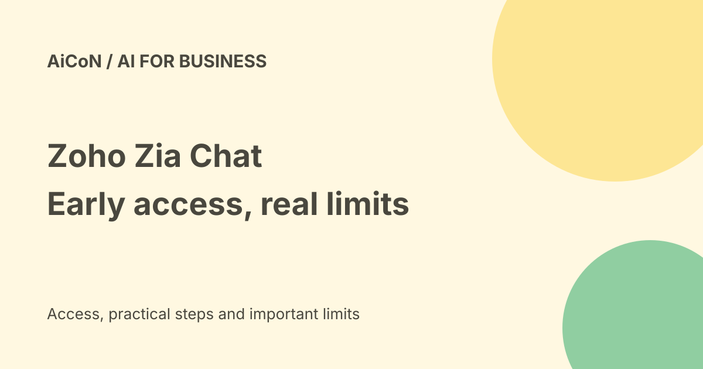

Zoho Zia Chat: India early access, English-only and BYOK costs
Zia Chat is the Zoho conversational interface for finding business information and taking actions across apps. Its current FAQ says early access is free in India and U.S. data centres, with OpenAI through Bring Your Own Key. Future pricing and bundles are still to be announced.

What is Zia Chat?
Zia Chat brings information from connected business apps into one conversation. Zoho describes questions across customers, deals, tickets, projects and transactions, plus reports and analysis. Zia Agents can go further, such as updating a record, escalating a ticket, assigning a task or sending an email.
The product page gives examples across CRM, Desk, Books, Projects, Analytics, Cliq and other Zoho apps. It says more than 45 applications can provide context. This is a business-workspace interface, not a general consumer chatbot with automatic access to your accounts.
Current availability
| Stage | Early access. |
|---|---|
| Data centres | India and U.S., per the current FAQ. |
| Language | English only for the interface and questions. |
| Current model route | OpenAI through Bring Your Own Key, or BYOK. |
BYOK means your organisation supplies a supported provider API key. The FAQ says Anthropic support is planned. It also plans a Zoho-hosted Zia model as a bundled option in selected regions. Do not describe either future option as already available to every account.
How much does it cost?
The FAQ says early access is free. General-availability pricing and licensing are not yet announced, and bundling is planned. The Zoho apps you use, the external model provider and other connected services can have their own fees. Check the provider's model rate and usage limits before connecting a billing-enabled key.
We did not verify a rupee price, future plan entitlement or account-specific quota. The free early-access statement is narrower than free forever or included in every Zoho subscription.
Permissions and privacy
Zoho says Zia Chat honours existing roles, access rules and record permissions. Administrators can control who gets access. A user without access to a CRM module or Books record should not receive it through the chat, according to the product FAQ. Verify those boundaries with your organisation's sample users before broad rollout.
The FAQ says business data is not used to train AI models. That statement is not the same as saying data never reaches any external processor. The current BYOK setup uses a frontier-model provider, while the planned in-house option is described as keeping processing inside Zoho. Review the selected model, agreements and data flow with your administrator.
External apps and actions
Zia Chat can use external applications that expose tools through MCP. That connection can add information and capabilities beyond Zoho. Inspect which data and write tools it exposes. Connecting an app does not mean every employee should be able to send, update or delete through it.
The product page describes actions within permissions and guardrails. We did not verify the exact confirmation behaviour for each action. Start with reading and drafts; check the target record, recipient and final contents before approving anything that changes work or sends a message.
A careful start for an Indian business
- Ask your Zoho administrator whether early access is enabled for your organisation's India data centre.
- Review allowed users, connected apps and the BYOK provider's billing and data terms.
- Try a narrow English question about a record you are allowed to see, then compare the answer to the original app.
- Use a draft or sample workflow to inspect proposed actions and guardrails.
- Check logs and permissions before extending access. Recheck pricing when general availability is announced.
We did not join early access, supply an API key, connect apps or execute actions. Regional support on a public page does not prove access is already enabled in your organisation.
Frequently asked questions
Does it currently support Malayalam?
The FAQ says English only. No Malayalam interface or query support was confirmed.
Is Anthropic already supported?
The cited FAQ says it is planned; current BYOK support is OpenAI.
Is it included in Zoho One now?
Bundling is planned, with details to be announced at general availability.
What changed since the earlier post?
This guide replaces the blanket bundled-subscription claim with current free early access and unannounced final pricing. It adds India/U.S. data centres, English-only use, current OpenAI BYOK and future-model caveats.
Sources: Zia Chat current product FAQ · Zoho AI overview · Zoho press announcements. Checked 7 October 2026.